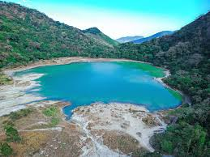
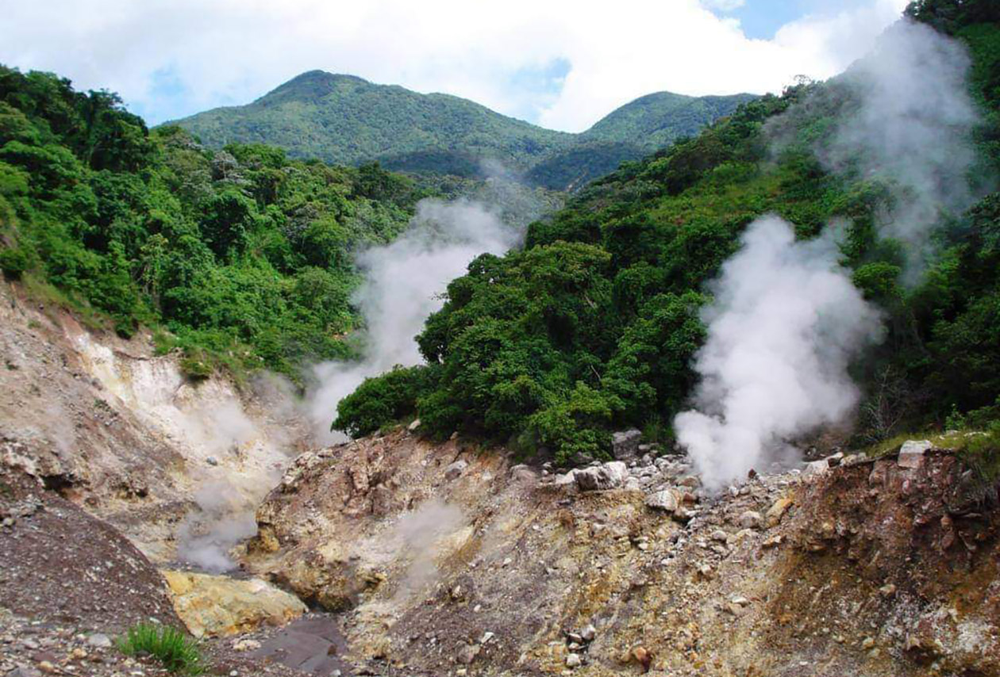

ALEGRÍA: Un lugar donde renace la felicidad
Es un rincón mágico, que alberga uno de los mejores cafés del país que podrás degustar en establecimientos con encantos únicos en su infraestructura y decoración.
Siendo una ciudad pintoresca, con clima templado y muchas bellezas naturales, Alegría se convierte en una estación contemplativa que no debes perderte.

CHINAMECA
Chinameca es un municipio del departamento de San Miguel en la zona oriente del país a 122 kilómetros de San Salvador
Su nombre significa Seto o Cerco para el viento. Algunos lugares recomendados a visitar en este municipio son el Cerro el Pacayal se encuentra ubicado a 5 km de la ciudad de Chinameca, tiene una ancha caldera conocida como laguna seca El Pacayal, pueden encontrase fumarolas en el lado norte, el cerro ha sido el sitio de un programa de exploración geotérmico.

PERQUÍN
Un pueblo lleno de historia, vistas panorámicas y riqueza natural te espera en el norte de Morazán.
Su principal atractivo es el cerro de Perquín el cual ofrece en la cima imponentes vistas del municipio y la Sierra de Nahuaterique y no te tomará mas de 15 minutos subirlo desde el Museo de La Revolución, otro de los atractivos históricos de este pueblo.